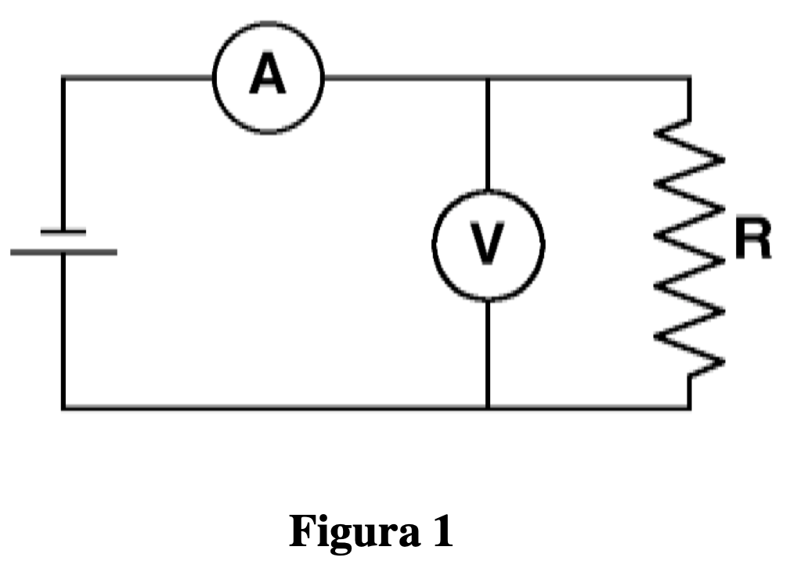
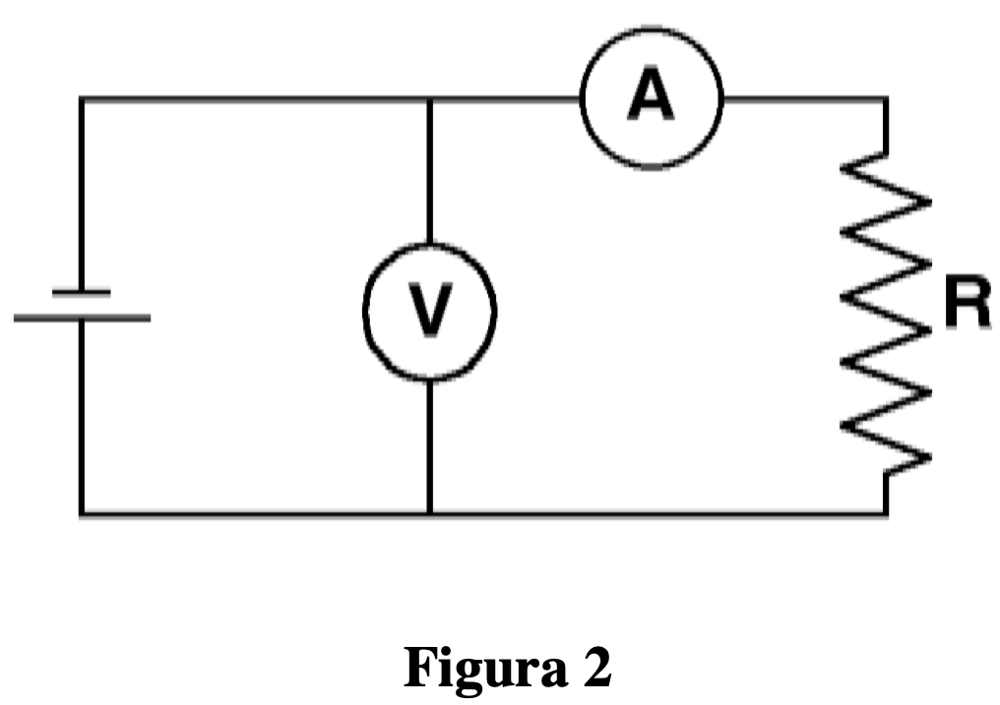
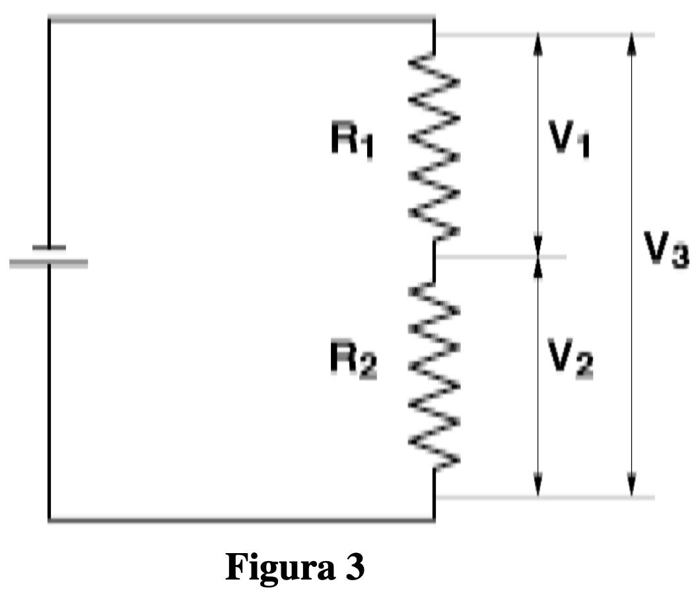

En resumenCurva V–I de una lámpara de incandescencia; resistencia dependiente de la temperatura; elemento no óhmico.
Corriente continua II: curva característica de una lámpara
Prácticas de Laboratorio — UNED
Josu M. Igartua
2024-10-26
Resumen
Instrumentos y métodos de medida en circuitos de corriente continua; curva característica V–I de una lámpara de incandescencia, un elemento no óhmico.
Objetivos
El objeto más importante de esta práctica es, por un lado, familiarizarse con los instrumentos y métodos de medida en circuitos de corriente continua y, por otro lado, asimilar las características y propiedades de este tipo de circuitos.
Los instrumentos de medida en circuitos eléctricos requieren en general que una cierta corriente fluya a través de ellos, y tienen una resistencia interna, por lo que se convierten en parte del circuito en el que se están realizando las medidas.
La resistencia de un voltímetro es muy grande, del orden de los M\Omega, mientras que la resistencia interna de un amperímetro es siempre muy pequeña, del orden de \sim 1\Omega, al menos en los utilizados en este laboratorio. Para medir un voltaje en un circuito, el voltímetro debe colocarse en paralelo entre los puntos cuya diferencia de potencial se desea medir, teniendo en cuenta que dos puntos del circuito que no estén separados por resistencias, condensadores, etc.., tendrán el mismo potencial.
Por el contrario, si se desea medir la intensidad de corriente en un punto de un circuito, el amperímetro debe colocarse en serie en ese punto. Un amperímetro nunca debe colocarse en paralelo en un circuito: al tener una resistencia tan pequeña, basta una pequeña diferencia de potencial entre los bornes del amperímetro para producir a través de él una intensidad de corriente muy grande que lo estropeará. En el laboratorio se utilizarán como voltímetro, amperímetro y ohmímetro, los llamados “multímetros” que realizan cualquiera de esas funciones, dependiendo de la posición de un conmutador en el aparato.
El hecho de que los instrumentos de medida se conviertan en partes integrantes del circuito en el que se desea medir puede hacer que en ciertos casos, su inserción pueda alterar de forma importante la situación que se deseaba medir. En esta práctica vamos a poder observar casos concretos donde esto sucede.
Una resistencia en un circuito puede ser medida sin necesidad de utilizar un ohmímetro, usando un voltímetro y un amperímetro. Para ello, se mide el voltaje V entre los extremos de la resistencia y la intensidad I que circula por ella, y se deduce la resistencia mediante la conocida expresión R=\dfrac{V}{I}. Sin embargo, los instrumentos afectan al circuito y pueden introducir errores.
Existen dos maneras conectar los elementos en el circuito de medida, a saber:
montaje corto, ver figura 1
montaje largo, ver figura 2


En los dos casos, si no se tienen en cuenta las resistencias internas de los aparatos de medida, se producirá un error sistemático para deducir el valor de la resistencia al usar la formula R=\dfrac{V}{I}, siendo V el voltaje medido por el voltímetro e I la intensidad medida por el amperímetro, .
En efecto, en el caso del montaje corto (Fig. 1), la intensidad que mide el amperímetro no será la que pasa realmente por la resistencia (que es la que nos interesa utilizar en la fórmula), si no que, de acuerdo con las reglas de Kirchhoff, será la suma de la intensidades que pasan por el voltímetro y por la resistencia.
Mientras que en el montaje largo (Fig. 2), el voltaje medido por el voltímetro no es la caída de potencial en la resistencia (que es la deberíamos utilizar en la fórmula) si no que será la caída de potencial en el conjunto amperímetro + resistencia.
Método operatorio
1
Mediante argumentos cualitativos, deducir cuál de los dos métodos será más preciso en los casos extremos de que la resistencia a medir sea muy grande o sea muy pequeña.
2
Determinar sucesivamente mediante ambos montajes (corto y largo) el valor de tres resistencias: una de unos 50 \Omega, otra de unos 500-1000 \Omega y otra de cerca de 1 M \Omega.
Para ello, usar como fuente el generador portátil de corriente continua disponible y, para cada resistencia y cada montaje, medir V e I y obtener R mediante la ley de Ohm.
3
Explicar, interpretar y comparar los resultados de los dos métodos y, también, con los determinados directamente con el ohmímetro.
IMPORTANTE:
Antes de conectar el circuito y efectuar la medida asegurarse que el multímetro que va a actuar de amperímetro está colocado en serie. Usar la conexión del amperímetro para intensidades pequeñas, NO DEBE USARSE NUNCA EL CONECTOR DE LA ESCALA DE 10 A DEL AMPERíMETRO.
Para la medida de la resistencia pequeña, utilizar un voltaje bajo (no superior a 5 voltios) en la fuente de alimentación y, así, limitar la corriente que pasa por el circuito y no dañar el fusible del amperímetro.
Para el resto de resistencias, se recomienda poner la fuente de alimentación al máximo.
Los cambios en un circuito causados al introducir los instrumentos de medida pueden ser tan grandes que no podamos medir la cantidad que queríamos medir. Esta limitación se puede ver al medir usando un voltímetro la caída de potencial a través de dos resistencias conectadas en serie (ver fig.3).

4
Conectar dos resistencias de unos 100-200 \Omega en serie a la fuente, situada su salida en unos 10 V.
Medir la caída de potencial a través de cada resistencia (V_{1} y V_{2}) y a través de su combinación, V_{3}. Es fundamental hacer estas medidas usando un único voltímetro.
Teóricamente, ¿qué relación se debe cumplir entre las tres magnitudes medidas? ¿Se satisface en las medidas realizadas?
Repetir las medidas usando resistencias del orden de 100 K\Omega.
Repetir nuevamente usando resistencias de cerca del M \Omega.
Para presentar los resultados obtenidos hacer una tabla de la forma:
¿Qué se puede concluir de los resultados obtenidos?
¿Cómo se explica que en ciertos casos las medidas efectuadas no cumplan la relación teórica?
5
Se dispone entre el material de una pequeña bombilla.
Medir directamente con el multímetro su resistencia.
6
Procedemos ahora a medir la resistencia de la lámpara de otra forma.
1
Conectar el voltímetro y amperímetro en montaje corto o largo (lo que sea más conveniente, según lo contestado en el apartado 1), colocando, además, para evitar que el voltaje sobre la lámpara sea excesivo, una resistencia de unos 100 \Omega en serie con la bombilla.
De ese modo la caída de potencial en la lámpara, que mide el voltímetro, no debe sobrepasar los 1.52 V cuando la fuente se sitúe en su salida máxima de unos 15 V.
2
Comprobar el funcionamiento del circuito.
Para ello, situar previamente el regulador de la fuente de forma que el voltaje sea el mínimo (cerca de 1 V), y subir el voltaje aplicado sobre la lámpara, variando lentamente la posición del regulador de la fuente, hasta comprobar que el filamento se empieza a poner incandescente.
A las primeras señales de esa incandescencia, PARAR y BAJAR NUEVAMENTE EL VOLTAJE HASTA EL MíNIMO.
3
Una vez comprobado el buen funcionamiento del circuito
Variar progresivamente la f.e.m. de la fuente desde su valor mínimo hasta el máximo
Anotar el voltaje y la intensidad medidos por los aparatos, en cada paso.
Comenzar con el voltaje más pequeño posible y aumentarlo sucesivamente con el regulador de la fuente.
Obtener datos al menos para 20 voltajes diferentes, de los cuales la mitad aproximadamente deben corresponder a voltajes que cubran regularmente el intervalo entre 0 y 500 mV.
Obviamente, el voltaje que se debe medir es el de la bombilla (no debe incluir la caída de potencial de la resistencia).
Hacer una tabla con los valores obtenidos de la forma:
V(mV)
I (mA)
V/I (\Omega)
¿Cuál es el valor de la resistencia de la bombilla?
¿Existe alguna relación entre la resistencia de la bombilla medida directamente mediante el multímetro en el apartado 4) y la observada ahora en las medidas de V e I?
El multímetro usa una fuente interna de corriente para la medida directa de la resistencia, ¿qué se puede concluir sobre el voltaje de dicha fuente?
CURVA CARACTERíSTICA DE LA BOMBILLA
La relación, o función I(V), entre el voltaje aplicado y la intensidad de corriente que circula en un dispositivo se denomina, en general, curva característica. En este apartado se estudiará la curva característica de la bombilla.
7
Con los valores obtenidos (V,I) hacer una gráfica que muestre la relación entre la corriente a través de la lámpara y la caída de potencial correspondiente.
La ley de Ohm exige que I= \left(\frac{1}{R}\right)V y por lo tanto, si la resistencia es constante, la gráfica de I frente a V debe ser una recta de pendiente \frac{1}{R}.
¿Existe una relación lineal de ese tipo en los datos medidos?
¿Es la resistencia de la bombilla constante?
8
Para entender los resultados anteriores, hay que tener en cuenta que la temperatura del filamento de la bombilla aumenta al aumentar la intensidad de corriente que circula por ella, hasta llegar a la incandescencia.
De la tabla obtenida y de la representación gráfica:
¿qué se puede decir sobre la variación con la temperatura de la resistencia de la lámpara? ¿aumenta o disminuye? ¿entre qué valores ha variado en el experimento?
Referencias
Tipler, P. A. y Mosca, G., Física para la ciencia y la tecnología, Vol. 2, Ed. Reverté.
Serway, R. A. y Jewett, J. W., Física para ciencias e ingeniería, Vol. 2, Cengage Learning. Capítulos sobre circuitos de corriente continua y leyes de Kirchhoff.
Alonso, M. y Finn, E. J., Física, Vol. 2: Campos y ondas, Addison-Wesley.